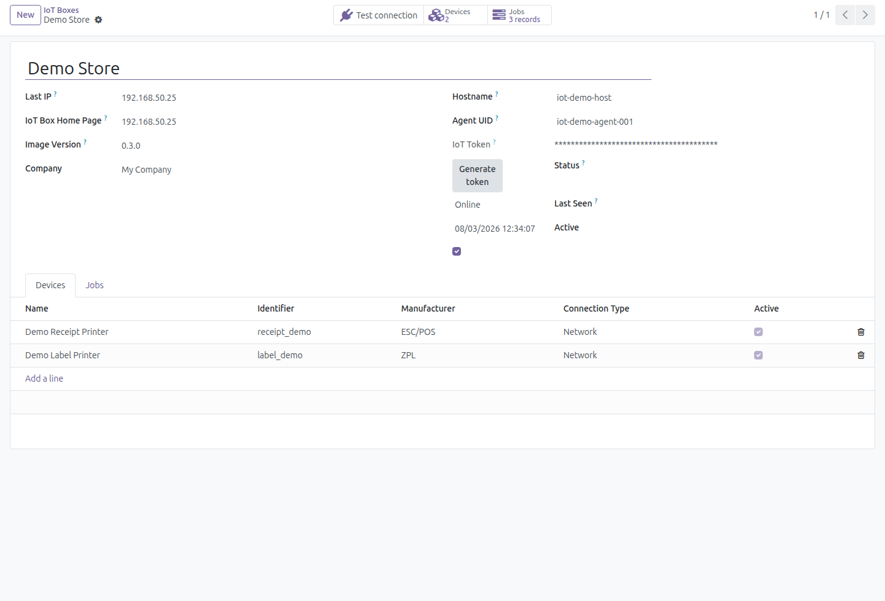
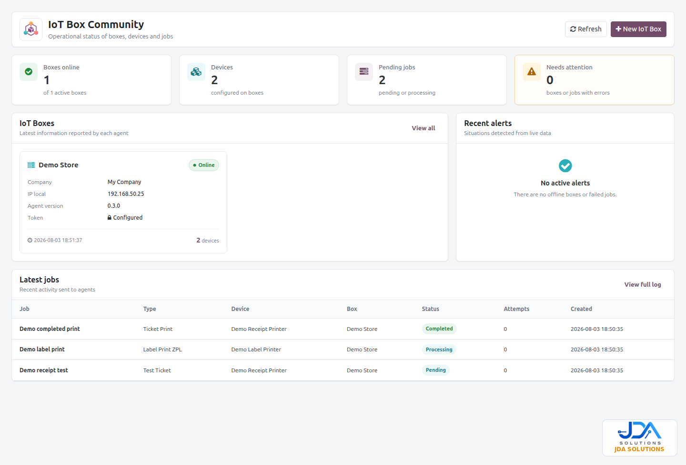
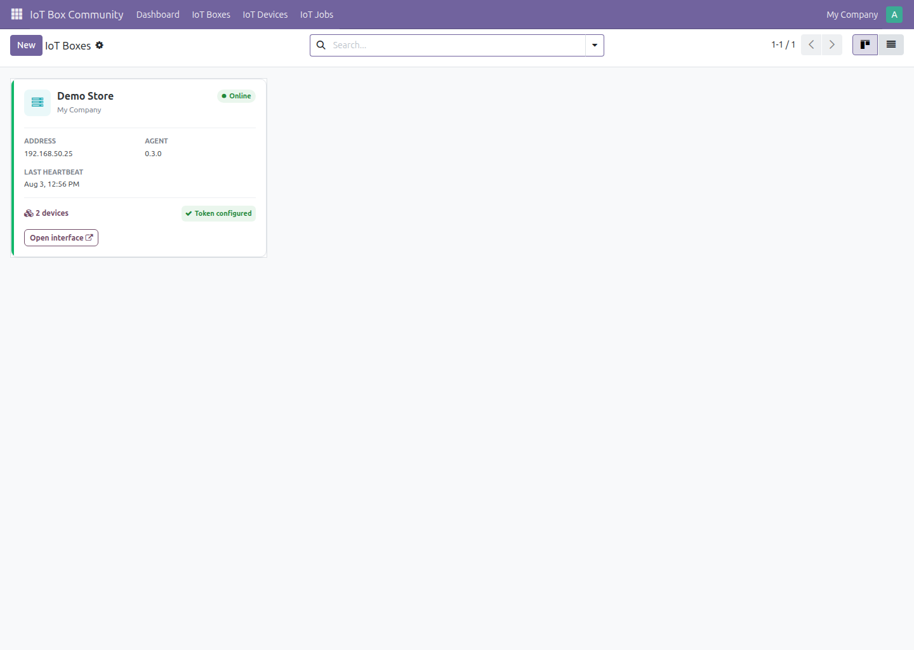
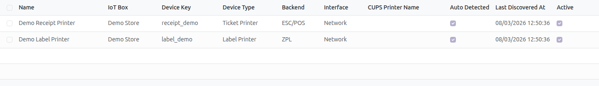
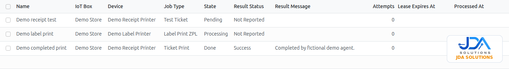

IoT Box Community
Connect Odoo 18 Community to printers and local devices through a secure, separately installed agent. Monitor boxes, discovered devices and print jobs from one Odoo workspace.
by JDA SOLUTIONS
Connect Odoo 18 Community to printers and local devices through a secure, separately installed agent. Monitor boxes, discovered devices and print jobs from one Odoo workspace.
by JDA SOLUTIONS
This addon is the Odoo-side control center. IoT Box Community Agent runs separately on the host that can reach local devices and is distributed separately by JDA SOLUTIONS. The addon never downloads, installs or executes agent code.
Create the box in Odoo, generate its token and keep it with the corresponding agent host. The token remains masked in Odoo.

Install IoT Box Community Agent on the Linux or Windows computer that can reach the printers or other peripherals. Linux v0.3 is validated; Windows requires physical validation in the target environment.
Runs next to the local devices and communicates outward with Odoo using the token you generated.
Open https://localhost:8443, accept the local self-signed certificate when prompted, then configure the Odoo URL, optional database and token. This portal is local to the agent host.
Illustrative flow — no live configuration data
The agent configuration and its secrets remain on this host, never in the addon repository.
Once the agent sends a heartbeat, Odoo shows the box online and the discovered devices. Use Test connection, then run a test print from the target printer.




Odoo 18 Community · Private Odoo.sh projects · On-premise deployments
Not compatible with Odoo Online (SaaS), because this addon contains Python code.
Odoo manages boxes, devices, jobs and heartbeat status. The agent host keeps its local connection settings and secrets. The addon never bundles, downloads or executes the separately distributed agent.
JDA SOLUTIONS
Administre cajas IoT, dispositivos, latidos y trabajos de impresión desde Odoo Community. El agente local se instala por separado y conecta las impresoras del equipo.
Incluye tickets, ZPL, cajón y documentos PDF con validación de token, reintentos e idempotencia. Compatible con despliegues Odoo.sh privados y locales.
JDA SOLUTIONS